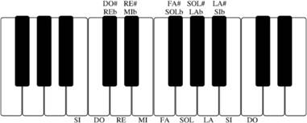

«Think of your ears as eyes.» — Keith Jarrett1
Come Funziona
Se la musica è l’arte dei suoni, l’ear training è l’allenamento dell’orecchio musicale. Cosa si intende con orecchio musicale? L’udito ha un aspetto passivo più ovvio che consiste nella capacità di riconoscere i suoni, ma ha anche un aspetto attivo in cui il musicista improvvisa una frase ed è istantaneamente in grado di produrla sul proprio strumento.
Ma di questo parleremo più avanti. Per ora torniamo al suono. Le sue caratteristiche sono:
- altezza
- durata
- volume
- timbro
Un corpo, una volta percosso, produce una vibrazione che, mettendo in moto l’aria circostante, arriva fino a noi. L’orecchio esterno convoglia le vibrazioni nel canale uditivo dove il timpano inoltra questi movimenti all’orecchio interno. Qui, la coclea, un complesso sistema meccanico/idraulico, attraverso le cellule ciliate, traduce le vibrazioni in impulsi nervosi che vengono infine interpretati dal cervello per generare la familiare sensazione di udito.
Se entrassimo nei dettagli del processo uditivo ci imbatteremmo subito nella complessità e nei limiti conoscitivi dell’analisi scientifica. L’aspetto più affascinante e misterioso dell’udito rimane tuttavia il luogo del suo manifestarsi: la coscienza.
Per noi esseri umani la coscienza è una cosa scontata. Ci svegliamo al mattino e ci ritroviamo immersi in un’esperienza soggettiva in prima persona, come fossimo in un cinema 3D multimediale con audio surround. Ma dov’è lo schermo su cui viene proiettata l’immagine che abbiamo davanti ai nostri occhi? Dove si trova la voce interiore che in questo momento sta leggendo queste parole? Be’, non lo sappiamo ancora.
David Chalmers illustra molto bene il problema della coscienza in questo video. Naturalmente c’è anche chi, come Massimo Pigliucci, considera quello della coscienza un falso problema. Per quanto si possa essere d’accordo con Pigliucci, il problema non diventa meno affascinante.
Abbiamo un’idea di quali sono le aree del cervello che si occupano dell’acquisizione dei vari tipi di segnali sensoriali (non abbiamo solo vista e udito: bisogna considerare anche tatto, gusto e olfatto). Sappiamo anche in quali zone avvengono i processi più avanzati di sintesi: ad esempio, nel caso dell’orecchio, possiamo distinguere tre tipi di corteccia uditiva:
- primaria: quest’area è principalmente responsabile della capacità di ascoltare. Il suo scopo è di processare aspetti del suono come volume e altezza;
- secondaria: quest’area processa i pattern armonici, melodici e ritmici;
- terziaria: i ricercatori sostengono che qui avviene l’integrazione, la sintesi dell’esperienza che chiamiamo musica.
Un altro degli aspetti affascinanti dell’udito trovo sia il suo effetto apparentemente immediato, nonostante la notevole complessità dei meccanismi costitutivi.
Quando udiamo inaspettatamente un fortissimo rumore, un riflesso istantaneo attiva i muscoli in un sobbalzo di spavento. Questo fenomeno ha a che fare con qualcosa di primitivo, istintivo, subcosciente e assimilabile a ciò che rende possibile al cuore di battere anche in assenza di uno stimolo apparente: una sorta di firmware che, in modo molto primitivo, entra in funzione ancora prima che il sistema operativo sia caricato rendendo disponibili tutte le funzionalità del computer.
Per restare nel campo dei computer, in informatica l’analisi di un suono richiede di scomodare un consistente numero di concetti matematici come le temibili trasformate di Fourier. Ma se ascoltiamo un musicista suonare in un’altra stanza, sappiamo subito che il timbro è di un pianoforte, che le mani del pianista si muovono a una certa altezza sulla tastiera, producendo un volume più o meno forte e con una certa durata. Tutto ciò avviene in una frazione di secondo e soprattutto senza importunare Fourier!
Quando impariamo a guidare l’auto, dobbiamo prima prendere confidenza con diversi pedali, il cambio e il volante, ma dopo qualche mese di pratica possiamo tranquillamente cambiare le marce mentre stiamo parlando con il passeggero. Com’è possibile che un gesto che richiede intensi sforzi sensoriali e di coordinazione motoria diventi poi naturale e automatico?
La scienza s’è fatta una mezza idea al riguardo ma una cosa la sappiamo con assoluta certezza: tramite esercizi di difficoltà progressiva che insistono sulla parte cosciente, è possibile allenare la mente ad acquisire capacità istintive che richiedono la coordinazione fluida di più sensi e muscoli.
Se stai leggendo questo testo è perché ti è stato insegnato prima l’alfabeto, poi hai imparato a leggere e scrivere il tuo nome, poi le prime parole, poi frasi, paragrafi, capitoli e così via.
Non imorpta in che oridne apapaino le letetre in una paolra, l’uinca csoa imnorptate è che la pimra e la ulimta letetra sinao nel ptoso gituso. Il riustlato può serbmare mloto cnofuso e noonstatne ttuto si può legerge sezna mloti prleobmi.
Riesci a leggere il testo appena citato perché la mente specializzata nella lettura può elevarsi a un livello istintivo dal quale è possibile osservare parole, frasi e infine il pensiero espresso senza preoccuparsi troppo dei dettagli. Ciò che sorprende è che il pensiero sia veicolato correttamente anche in assenza di correttezza formale del testo.
Immaginiamo di osservare dei volumi raccolti in un mobile adibito a libreria. Anche se non ce ne rendiamo conto, il senso della vista ci comunica la forma ed il materiale del mobile, il dettaglio dei dorsi accatastati, i loro colori e la forma dei caratteri che indicano titolo e autore. In una frazione di secondo siamo perfettamente consci che quell’oggetto è una libreria, che la grafica dei dorsi suggerisce dei testi di informatica e che in totale i volumi saranno una trentina. Non abbiamo bisogno della parola libreria per sapere con cosa abbiamo a che fare perché, semplicemente, lo sappiamo a priori. Solo se abbiamo la necessità di comunicare il concetto di libreria useremo la parola specifica nella lingua del nostro interlocutore.
Se in una libreria abbiamo la necessità di trovare un certo volume, possiamo cercarne il titolo. Con una semplice osservazione ci rendiamo conto se i volumi sono disposti in ordine alfabetico. Se torniamo con frequenza a consultare quello specifico scaffale, alla fine ricorderemo che contiene un volume sulla programmazione C, uno sulla crittografia e uno sui database relazionali.
Il sistema che rende possibili, immediate e istintive le esperienze basate sul senso della vista che ho appena descritto è lo stesso che rende possibile la trascrizione di una sinfonia grazie al senso dell’udito.
Sarei in grado di trascrivere la Nona di Beethoven dopo un solo ascolto? Sfortunatamente no. Il motivo è lo stesso per cui non è sufficiente un solo sguardo per identificare e memorizzare tutti i testi di tutti i volumi presenti in una biblioteca. Per un compito così impegnativo abbiamo bisogno di esercitare la memoria, il tempo a disposizione, la pazienza e l’educazione musicale: tutti elementi che, ahimè, siamo sempre meno motivati a frequentare.
Quando localizziamo un libro in uno scaffale, lo preleviamo, lo leggiamo e ne acquisiamo i contenuti, nessuno verrà a batterci le mani perché abbiamo compiuto una azione avvolta da un’aura di mistero. Quasi tutti si affidano ad una scuola guida per imparare a guidare un mezzo a motore col cambio manuale ma nessuno ci fermerà nel traffico per congratularsi della nostra coordinazione psicomotoria. Eppure, per qualche assurdo motivo, pur basandosi sugli stessi meccanismi sensoriali e cognitivi, la capacità di riconoscere i suoni ci sembra rientrare nel campo della magia nera più che nelle possibilità ben conosciute e consolidate di un’educazione progressiva.
Certo, la vista e l’udito sono sensi differenti e probabilmente da un punto di vista evolutivo la vista ha goduto di un vantaggio innegabile: è molto più facile fuggire da un predatore avendolo visto a grande distanza che avendone ascoltato i passi quando ormai siamo diventati il suo spuntino. Questo spiegherebbe anche perché, già nel cenozoico, i musicisti non godevano di grande considerazione.
No, scherzo: la musica è sempre stata un grande veicolo di aggregazione sociale, ben prima dei mega concerti di Vasco. Purtroppo non ci è dato sapere cosa suonassero gli australopitechi nelle notti stellate africane ma la scienza è abbastanza concorde sul fatto che gli accendini non fossero ancora stati inventati a quel tempo, privando così le ballate del loro irresistibile fascino romantico. Le droghe invece c’erano già, anche se, in mancanza di accendini, per fumare una canna dovremo attendere tempi più illuminati ed una legislazione antiproibizionista.
Un altro aspetto interessante dei nostri sensi è la loro interdipendenza. In questo articolo possiamo vedere un video in cui un cieco guida la bicicletta su strada usando l’ecolocazione, dimostrando come l’udito possa supplire alle funzionalità di orientamento cui noi più fortunati abbiamo accesso tramite la vista. Più sotto viene illustrato il bizzarro effetto McGurk: a parità di suono emesso, il cervello percepisce due suoni distinti a seconda del labiale osservato: in questo caso la vista scavalca a piè pari l’udito.
Questa interdipendenza dei sensi nella musica è importante perché suonare uno strumento coinvolge anche il tatto e la vista. Un sassofonista non può vedere lo strumento durante la performance ma avrà una visualizzazione mentale della diteggiatura, dell’emissione di aria e della sensazione tattile sia delle dita sui tasti che della pressione esercitata dal labbro inferiore sull’ancia. Passando da uno sax all’altro, il musicista ha bisogno di abituarsi alle piccole differenze di posizione dei tasti e alla loro corsa dissimile. Nulla che un po’ di esercizio non possa risolvere, ma lo smarrimento iniziale è dovuto alla sensazione tattile poco familiare. Tutt’altro discorso è il cambio di imboccatura. Togliete a un sassofonista la sua imboccatura abituale e avrete una persona in preda all’angoscia cosmica.
Dal punto di vista dell’educazione musicale il pianoforte è senz’altro lo strumento ideale perché la tastiera rende disponibile visivamente tutte le possibilità sonore. Se pensiamo ai cantanti, l’emissione della voce si basa su dei muscoli che modificano la tensione delle corde vocali e, di conseguenza, l’altezza dei suoni, ma non è possibile osservare direttamente né i muscoli né le corde vocali in azione (ci sarebbe la laringostroboscopia ma non mi sembra un metodo molto pratico per un uso didattico musicale). I cantanti hanno senz’altro una memoria muscolare ma hanno anche bisogno di un riferimento mentale per riprodurre un intervallo. Ecco perché viene consigliato lo studio almeno elementare del pianoforte: per sviluppare quella capacità di concettualizzazione che serve a supplire all’apparente mancanza di concretezza del mondo dei suoni.
Non è possibile vedere un suono ma visualizzare mentalmente la pressione di un tasto del piano è possibile ed è anche possibile immaginarne il suono prodotto usando la nostra voce interiore, la stessa che in questo momento sta leggendo queste parole. Se possiamo visualizzare la pressione di un secondo tasto ed immaginarne il suono, abbiamo appena posato il primo mattone per costruire l’edificio mentale sonoro, abbiamo cioè concettualizzato un intervallo a livello cognitivo.
Ci sono pianisti classici che, dopo essersi allenati a lungo per un concerto, possono sedere, chiudere gli occhi e immaginare l’intera performance senza neanche toccare lo strumento. Li vedreste muovere le dita, perché la concettualizzazione riguarda anche la corteccia motoria. La stessa cosa sarebbe naturalmente possibile ad esempio per un sassofonista. È chiaro che la performance richiede la padronanza completa del tatto e dei muscoli ma la visualizzazione mentale non è meno potente perché richiede una interiorizzazione del materiale ad un livello di coscienza profondo e istintivo.
«Ma mia nipote di Ercolano sa cantare benissimo Anema e Core pur non avendo mai visto un pianoforte in vita sua» direte voi. Sono molto contento e simpatizzo con la nipote e, se il suo desiderio è quello di cantare Anema e Core o qualsiasi altro pezzo della tradizione napoletana, il tipo di concettualizzazione della bambina va benissimo, anche non rifacendosi al pianoforte. Per uno studio formale tuttavia, il pianoforte è utilissimo sia per riprodurre e verificare gli intervalli, sia per l’accompagnamento. La bambina di Ercolano potrà anche imitare lo scat di Ella Fitzgerald senza sapere cos’è un tritono ma se un giorno volesse imparare a improvvisare, avrebbe bisogno di lavorare su concetti del linguaggio musicale per i quali il pianoforte sarebbe senz’altro indispensabile.
In realtà, molti musicisti fanno ear training con la pratica quotidiana dello strumento senza neanche rendersene conto. E va benissimo anche questa modalità di apprendimento. Ma, per improvvisare una frase musicale riproducendola istantaneamente sullo strumento, serve la padronanza istintiva del linguaggio che solo un orecchio ben allenato possiede.
Pensa a quale dovesse essere la padronanza di linguaggio e concettualizzazione di Beethoven per aver scritto alcune fra le sue pagine più memorabili in un periodo in cui era ormai diventato completamente sordo. Oppure pensa a Bach che, davanti a Federico il Grande, Re di Prussia, improvvisò una fuga a quattro voci su un tema che lo stesso re gli aveva appena proposto.
L’improvvisazione ha avuto grandissima importanza nella musica che oggi chiamiamo classica (non credo che Bach, Beethoven o Mozart pensassero di scrivere musica classica, per loro era musica e basta). Sappiamo con certezza che ognuno dei grandi della musica era prima di tutto un grande improvvisatore. L’improvvisazione è rimasta un’arte a lungo praticata in ambito europeo e ne rimane traccia nelle numerose opere con accompagnamento di basso continuo. Questo nome un po’ bizzarro indica in realtà una pratica assimilabile a quella moderna di indicare soltanto gli accordi, lasciando all’esecutore la libertà di scegliere rivolti, voicing, ecc.
A un certo punto, per motivi di praticità, la didattica ha imposto un modello di educazione musicale in grado di produrre interpreti preparatissimi dal punto di vista dell’esecuzione ma purtroppo incapaci di produrre musica autonomamente usando un proprio linguaggio. La padronanza del linguaggio musicale è stata allora relegata alla élite dei compositori. Quando l’Europa ha smesso di praticare l’improvvisazione, per qualche motivo, dall’altra parte dell’Oceano Atlantico, alcuni musicisti ne hanno ripreso la tradizione, producendo probabilmente l’unica vera forma d’arte genuinamente americana: la musica Jazz.
La storia dell’improvvisazione ha conosciuto nel BeBop un’epoca d’oro. Andando ad analizzare formalmente una qualsiasi registrazione di Charlie Parker, ci troviamo di fronte ad una tale padronanza di linguaggio che non ha nulla da invidiare alla tradizione classica europea. Parker e i suoi colleghi conoscevano infatti molto bene le opere di Ravel, Bartok, Debussy, Stravinsky, ecc. La musica improvvisata ha vissuto poi una nuova stagione con i quintetti di Miles Davis, le fasi dell’ultimo John Coltrane e il free jazz di Ornette Coleman, solo per fare i nomi più conosciuti.
La musica improvvisata oggi è più viva che mai. La sperimentazione è tutt’altro che finita ed i risultati sono molto spesso apprezzabili anche ai non addetti ai lavori. È in campo un grande fermento ed il fatto che la musica più in generale goda di così scarsa considerazione nelle istituzioni contemporanee è una amara considerazione che spero venga presto soppiantata da una mentalità collettiva in cui la sia la bellezza a guidare la quotidianità e non più il profitto. Ma lasciamo per ora da parte lo spirito rivoluzionario e torniamo all’educazione musicale.
Come Svilupparlo
In musica, la base da cui si parte per lo studio dell’ear training è l’intervallo, ovvero la distanza fra due note. L’intervallo può essere orizzontale (o melodico) quando i due suoni sono eseguiti in sequenza, oppure verticale (o armonico) quando i suoni sono eseguiti contemporaneamente. Orizzontale e verticale si riferiscono al modo in cui si scrive la musica. Bisogna imparare entrambi i tipi di intervallo, perché uno serve per la comprensione delle melodie e l’altro per la comprensione degli accordi.
Gli intervalli seguono delle vetuste regole di nomenclatura. I più giovani direbbero che i loro nomi sono parecchio incasinati e, in effetti, guardando la tavola su wikipedia, non gli si può proprio dare torto, specie quando si apprende dell’esistenza di intervalli ultra deficienti. Per semplificarci la vita, riporto un elenco minimale degli intervalli che troviamo all’interno di un’ottava:
- unisono (stesso suono, nessun intervallo)
- seconda minore (mezzo tono)
- seconda maggiore (un tono)
- terza minore (un tono e mezzo)
- terza maggiore (due toni)
- quarta giusta (due toni e mezzo)
- quarta aumentata (tre toni)
- quinta giusta (tre toni e mezzo)
- quinta aumentata (quattro toni)
- sesta maggiore (quattro toni e mezzo)
- settima minore (cinque toni)
- settima maggiore (cinque toni e mezzo)
- ottava giusta (sei toni)
Come vedi, il nostro elenco mostra 13 diversi intervalli. Ora, l’unisono non è un vero e proprio intervallo ma una convenzione per indicare che due suoni hanno la stessa altezza ed equivale a dire intervallo zero. Restano quindi 12 intervalli. Di questi 12 intervalli, almeno 7 li conosci già bene perché, a meno che tu non abbia vissuto in una caverna su un continente inesplorato, sappi che la quasi totalità della musica cui siamo esposti quotidianamente si basa sui suoni della scala maggiore.
Nella tonalità di DO, la scala maggiore è composta dalle note: DO, RE, MI, FA, SOL, LA, SI, DO. Osserviamo la tastiera del pianoforte:

La scala maggiore di DO, sul pianoforte, è composta interamente da tasti bianchi. Facile, no? Suonala un po’ di volte, prima a salire e poi a scendere. Cantala mentre la stai suonando. Magari non sei Bobby McFerrin ma, se ti impegni abbastanza, vedrai che puoi intonare tutte le note senza grosse difficoltà. Prova anche a immaginare di cantare le note con la tua voce interiore, senza effettivamente cantare ma usando solo la testa. Ti renderai conto che è molto più facile rispetto a cantare perché nel cervello non devi controllare anche i muscoli delle corde vocali. Continua così ancora per un po’: canta, poi immagina di cantare, fino a quando la tua voce interiore può intonare perfettamente tutte le note.
Ora mischia le note un po’ a caso, sempre usando solo i tasti bianchi. Fai caso a come alcune combinazioni di suoni sono più dissonanti, ovvero creano una tensione che ti aspetti venga in qualche modo risolta.
Ti faccio un esempio: suona le note DO, SOL, prima una, poi l’altra. Ora suonale insieme. La qualità di questo intervallo è consonante, cioè le due note stanno bene insieme e non sembrano creare una tensione che va in qualche modo risolta. Questo è un intervallo di quinta giusta. Se numerassimo le note in sequenza a partire dal DO con il numero 1, avremmo:
- DO
- RE
- MI
- FA
- SOL
- LA
- SI
- DO
Ecco perché diciamo che DO-SOL è un intervallo di quinta: perché si trova sul quinto grado della scala maggiore nella tonalità di DO. Cosa vuol dire tonalità di DO? Vuol dire che abbiamo preso la nota DO come riferimento ed abbiamo costruito il nostro sistema di suoni, nel nostro caso la scala maggiore, a partire da quella nota2.
Se andassimo ad analizzare gli intervalli che separano fra di loro le note della scala maggiore di DO, vedremmo che fra DO e RE c’è un tono, fra RE e MI un tono, fra MI e FA un semitono, fra FA e SOL un tono, fra SOL e LA un tono, fra LA e SI un tono e fra SI e DO un semitono. Lo schema costruttivo della scala maggiore può quindi essere riassunto nella sequenza:
- tono
- tono
- semitono
- tono
- tono
- tono
- semitono
Usando questo schema possiamo costruire la scala maggiore in qualsiasi tonalità. Ad esempio, prendendo come riferimento il FA#, le note della scala di FA# maggiore sarebbero: FA#, SOL#, LA#, SI, DO#, RE#, MI#, FA#. Il fatto che ci siano tanti diesis è, ahimè, di nuovo un problema di nomenclatura vetusta, ma non facciamoci ingannare dalla apparente complessità dei nomi delle note che stiamo usando: la scala maggiore è pur sempre una scala maggiore ed il rapporto e la semplicità interna dei suoi suoni sono identici ai suoni che sui tasti bianchi del pianoforte abbiamo riconosciuto come semplici e familiari. Abbiamo solo cambiato il punto di vista e introdotto un bel po’ di tasti neri ma i rapporti interni alle note che costituiscono la nostra scala si basano sempre ed esclusivamente su due intervalli: quello di tono e quello di semitono.
Quello che sto cercando così faticosamente di dire è che, se sei in grado di cantare una scala maggiore, sei anche già in possesso di tutto ciò che ti serve per riconoscere e riprodurre l’intervallo di semitono e quello di tono. Magari non sapevi cosa fosse una scala maggiore o un semitono ma sapevi già cantare il materiale.
Per ogni nota della scala maggiore, possiamo sia considerare l’intervallo di ogni nota rispetto alla precedente, come abbiamo appena fatto, ma possiamo anche considerare gli intervalli tra la nota che abbiamo preso come riferimento per la tonalità (DO) e le note che si trovano su ogni grado della scala.
Vedremo che tra DO e RE c’è un intervallo di un tono (seconda maggiore), tra DO e MI due toni (terza maggiore), tra DO e FA due toni e mezzo (quarta giusta), tra DO e SOL tre toni e mezzo (quinta giusta), tra DO e LA quattro toni e mezzo (sesta maggiore), tra DO e SI cinque toni e mezzo (settima maggiore) e tra DO e DO sei toni (un’ottava).
Non farti spaventare dai nomi delle cose: finora stiamo sempre e solo parlando dei suoni dei tasti bianchi del pianoforte. Tutta la complessità legata ai nomi dei concetti musicali è dovuta esclusivamente alla necessità di comunicare in maniera inequivocabile un’idea. Se vivessi in una torre d’avorio, è vero che mi troverei nella spiacevole condizione di dover spiegare agli agenti della Protezione Animali, della Dogana e dell’Agenzia delle Entrate dove ho trovato tanti elefanti, ma non avrei il problema di dover usare 6 diesis nella scala maggiore di FA#. Darei a ognuno dei 12 semitoni dell’ottava un nome unico, ad esempio: AW, KA, WA, WE, OH, PASQUALE, ecc. E così sarei felice, almeno fin quando non sarei costretto a scendere dalla mia torre d’avorio3 per convincere qualcuno a suonare il mio quartetto d’archi in OH fenicio.
L’esercizio che ti propongo ora serve per interiorizzare meglio gli intervalli della scala maggiore. Se prima abbiamo giocato più o meno a caso con i tasti bianchi, ora andremo ad esaminare gli intervalli più semplici rispetto al riferimento che ci siamo dati, ovvero la nota DO.
Partendo da DO, il primo intervallo che incontriamo è l’unisono, ovvero la nota DO seguita dalla stessa nota. Questo non dovrebbe essere un intervallo difficile da riconoscere perché l’altezza del suono non sta cambiando, stiamo solo inserendo una pausa tra il primo ed il secondo suono.
L’intervallo successivo è DO-RE. Si tratta di un intervallo di un tono o di seconda maggiore. Suona prima il riferimento (DO) e poi la nota dell’intervallo (RE). Queste due note sono molto vicine e il loro suono diventa strano solo quando le suoniamo contemporaneamente. Prova a suonare DO e RE insieme: buffo, eh? È come se dovesse succedere qualcosa. Ascolta bene i battimenti. Senti come quelle che fino a un secondo fa consideravamo solo due banali note suonate insieme, ora che stai prestando particolare attenzione, presentano una ricchezza armonica per nulla banale?
Se segui lo stesso procedimento con gli altri gradi della scala, vedrai che DO-MI (terza maggiore) e DO-SOL (quinta giusta) sono intervalli particolarmente consonanti, cioè suonano bene mentre gli altri sono più dissonanti nel contesto del nostro riferimento che è la tonalità di DO maggiore. L’intervallo di quarta giusta ad esempio (la nota FA) ha una naturale tendenza a voler risolvere sulla terza maggiore (MI), come si trovasse in un’area poco familiare e volesse tornare a casa per essere rassicurata. Stessa cosa dicasi per la nota SI (settima maggiore), la quale vuole muoversi verso il più vicino DO.
Soffermati a lavorare su questi intervalli della scala maggiore, suonandoli prima in maniera melodica (prima una nota, poi l’altra) e poi in maniera armonica (due note insieme). Canta sempre e usa la tua voce interiore quando fai questi esercizi. Ovviamente non puoi cantare un intervallo armonico (due note insieme) ma cantarlo in maniera melodica ti aiuterà a distinguere le singole note che lo compongono.
La tua voce interiore dovrebbe essere invece in grado di immaginare i due suoni contemporaneamente. Se non riesci, soffermati prima a pensare al primo suono per qualche secondo, immaginando di mantenerlo mentre fai partire il secondo suono. Per qualcuno questo esercizio mentale è più difficile che per altri perciò non preoccuparti se non riesci subito. Fai leva sulla tua pazienza, insisti con calma e decisione e vedrai che ti sarà possibile riuscire.
Quando ti sarai esercitato abbastanza (dove abbastanza è variabile da persona a persona: a volte bastano minuti, altre volte sono necessari mesi) puoi provare l’esercizio successivo che consiste nel darti un riferimento (ad esempio puoi suonare la nota DO) e provare a immaginare quale suono uscirà premendo un altro tasto bianco. Ad esempio, per prima cosa suono la nota DO e la canto, poi penso al tasto FA e cerco di immaginare quale suono sarà prodotto dalla pressione del tasto, poi canto la nota che penso sia il FA e infine la suono per verificare che sia corretta. Poiché ti sei precedentemente esercitato con la scala maggiore a un’ottava, dovresti essere in grado di immaginare i suoni di tutti i tasti bianchi compresi da DO al DO dell’ottava successiva. Prova anche a cambiare il riferimento, ovvero non suonare sempre DO come prima nota: usane un’altra sempre scelta a caso.
L’esercizio che ti propongo ora serve a verificare in modo inequivocabile che hai interiorizzato la scala maggiore ad un livello istintivo. Genera un po’ di gruppi di numeri da 1 a 8. Per comodità te ne riporto qui sotto alcuni set di esempio ma puoi generarne quanti ne vuoi. Ogni set rappresenta una melodia ed ogni numero del set rappresenta il grado della scala. Ad esempio: 2, 8, 1, 5, 6 sarebbero RE, DO, DO, SOL, LA, dove 8 sarebbe il DO più alto e 1 il DO più basso.
Set 1: 8, 7, 1, 3, 4
Set 2: 5, 4, 1, 3, 2
Set 3: 5, 4, 2, 3, 7
Set 4: 7, 6, 1, 8, 2
Set 5: 6, 5, 8, 2, 1
Set 6: 2, 1, 3, 4, 8
Set 7: 4, 5, 3, 8, 2
Set 8: 5, 6, 8, 7, 4
Set 9: 8, 5, 4, 3, 2
Set 10: 6, 2, 7, 1, 8
L’esercizio consiste nel darti un riferimento suonando il DO e nel cantare le melodie (i set) rappresentate dai numeri.
Anche in questo caso ti renderai presto conto che è molto più facile immaginare i suoni che cantarli. L’intonazione è un problema concreto solo se vuoi cantare, credimi. Ai fini dell’ear training ti posso assicurare che una intonazione vocale incerta non è necessariamente sintomo di cattiva comprensione di un concetto musicale o una melodia. Per quanto mi sia facile improvvisare una frase bebop al piano, cantarla sarebbe tutta un’altra storia perché non mi sono mai esercitato con la voce. Sono sicuro che alcuni miei amici preferirebbero essere crocifissi piuttosto che dovermi sentire cantare.
Una volta acquisita una padronanza istintiva della scala maggiore, non ci resta che aggredire i tasti neri per completare così i 12 suoni ed entrare nel meraviglioso mondo della scala cromatica: un mondo idilliaco in cui tutti gli intervalli godono di pari diritti e consonanza e dissonanza sono solo vecchi concetti da relegare ai matusa della tonalità.
Ho una buona notizia per te: gli intervalli che nella scala maggiore di DO sono rappresentati dai tasti neri del piano, sono già presenti sotto altra forma all’interno della stessa scala maggiore. Andiamo a esaminarli:
- l’intervallo di semitono (DO-DO#), la seconda minore, è presente nella scala maggiore di DO come MI-FA e SI-DO;
- l’intervallo di un tono e mezzo (DO-RE#), la terza minore, è presente nella scala maggiore di DO come RE-FA, MI-SOL, LA-DO e SI-RE;
- l’intervallo di tre toni (DO-FA#), la quarta aumentata, è presente nella scala maggiore di DO come FA-SI e SI-FA;
- l’intervallo di quattro toni (DO-SOL#), la quinta aumentata, è presente nella scala maggiore di DO come MI-DO, LA-FA e SI-SOL;
- l’intervallo di cinque toni (DO-SIb), la settima minore, è presente nella scala maggiore di DO come RE-DO, MI-RE, SOL-FA, LA-SOL e SI-LA.
Il tuo compito quindi resta quello di visualizzare ogni intervallo in ogni tonalità. Questo è un esercizio che, se suoni uno strumento diverso dal piano, troverai molto utile fare anche sul tuo strumento e ti aprirà la strada alla visualizzazione mentale di tutte le possibilità sonore a tua disposizione.
Il mio consiglio è di seguire un ciclo annidato in cui al primo livello si itera sugli intervalli e al secondo sulla scala cromatica, partendo dalla nota più bassa sullo strumento fino alla nota più alta. Lo scrivo in pseudo-codice per gli informatici e poi in italiano per gli esseri umani:
for interval in (2m, 2M, 3m, 3M, 4, 4#, 5, 5#, 6, 7m, 7M, 8) {
for note in (instrument_range) {
play interval from note  
}
}
Per ogni intervallo compreso nell’elenco, per ogni nota compresa nell’estensione dello strumento, suona l’intervallo a partire dalla nota.
Una persona sana di mente avrà già capito che l’esecuzione completa dell’esercizio richiede almeno una mezz’oretta e una pazienza inversamente proporzionale al tempo speso nell’esercizio stesso (in altre parole: più ti eserciti, più diventa facile).
Se immettessimo questo pseudo-codice in un ipotetico computer musicale, specificando l’estensione naturale del sassofono, la cui nota più bassa è SI bemolle e la più acuta il FA#, la sua esecuzione produrrebbe il seguente output:
play 2m from Bb (Bb-B)
play 2m from B (B-C)
play 2m from C (C-C#)
...
play 2m from F (F-F#)
play 2m from F# (F#-G)
play 2M from Bb (Bb-C)
play 2M from B (B-C#)
play 2M from C (C-D)
...
Una variante interessante consiste nell’iterare sul circolo delle quinte
piuttosto che sulla scala cromatica. Se te lo stai chiedendo, nei simboli degli
intervalli, m sta per minore, M per maggiore e # sta per aumentato. Ho
scritto tra parentesi le due note dell’intervallo. I nomi delle note seguono la
convenzione anglosassone per comodità mia. Se non conosci la convenzione
anglosassone, questo è un buon momento per impararla perché nessuno scrive
spartiti usando la convenzione italiana, nemmeno noi italiani.
Una variante ancora più interessante consiste nel fare l’intero esercizio a mente, immaginando di suonare il tuo strumento. Sappi però che non mi riterrò responsabile nel caso l’esercizio ti rendesse necessarie delle cure psichiatriche.
Una alternativa un po’ più compatibile con la sanità mentale consisterebbe nel limitarsi alla scala maggiore, sempre nell’estensione di un’ottava, lavorando però su tutte le 12 tonalità.
Naturalmente, nel mondo reale, gli intervalli non si limitano a un’ottava ma confido che, se sei arrivato fin qui, non avrai problemi a esercitarti sugli intervalli più remoti, tenendo presente che l’ottava è un ottimo riferimento per i salti di, appunto, ottava. Il mondo reale inoltre non si limita all’uso della scala maggiore (per fortuna, altrimenti sai che noia…), ma oltre ai vari modi (fra i quali compare anche la scala minore naturale), dovresti prendere familiarità anche con la scala minore melodica e armonica, con la scala diminuita (8 suoni, semitono-tono) e quella aumentata (6 suoni, tutti toni interi). Tieni presente che di scale diminuite ne esistono 3: tutte le altre sono riconducibili a una precedente scala diminuita ma partendo da una nota diversa. Stesso discorso per la scala esatonale di cui esistono solo 2 versioni.
Per il riconoscimento degli accordi il discorso si complica un bel po’ e non saprei come meglio aiutarti se non dicendoti di scomporre mentalmente gli accordi negli intervalli delle singole note costitutive. Allenati a riconoscere prima le triadi delle famiglie maggiori, minori, aumentate e diminuite, poi passa alle quadriadi (gli accordi che arrivano alla settima per capirci) e così via.
Avrai notato che in tutti gli esercizi faccio sempre usare un riferimento iniziale. L’orecchio relativo ha bisogno di un riferimento da cui partire nell’analisi degli intervalli e si differenzia dall’orecchio assoluto che invece di tale riferimento può fare a meno. Molte persone che mi conoscono mi dicono: «ah, tu hai l’orecchio assoluto». No, il mio è un orecchio relativo, perché ho bisogno di un riferimento per orientarmi nel mondo dei suoni. Sembra sia possibile esercitare l’orecchio assoluto fino a una certa età e infatti molte persone dotate di orecchio assoluto di mia conoscenza sono musicisti che hanno iniziato molto presto da bambini. Tuttavia, alcuni studi recenti sembrano dimostrare che è possibile sviluppare l’orecchio assoluto anche in età adulta. Questo non toglie che la capacità di analisi dell’orecchio relativo non è meno importante di quella dell’orecchio assoluto.
Un’altra cosa importante da tenere presente è che il cervello apprende meglio quando si trova nella cosiddetta learning zone (zona di apprendimento). In altre parole, l’esercizio non dev’essere tanto facile da far annoiare il cervello ma neanche troppo difficile da scoraggiarlo. Se in questa zona di equilibrio tra facilissimo e impossibile immettiamo ogni tanto un elemento di difficoltà leggermente superiore alla media, il cervello apprende e interiorizza più facilmente. Molti metodi di apprendimento hanno fatto loro questa filosofia introducendo anche meccanismi di gamification, cioè ad esempio l’esercizio prevede un punteggio da raggiungere e livelli di difficoltà progressiva da superare.
Oggi esistono tantissimi software che possono aiutarci a fare ear training. Vorrei consigliarne uno che è anche quello che uso quotidianamente e si chiama My Ear Training. C’è una funzionalità di dettato ritmico che trovo molto utile perché spesso si sottovaluta l’aspetto della durata del suono quando invece è fondamentale nella costruzione di un groove. Poi ci sono esercizi sia di tipo melodico che armonico e per ogni esercizio si può scegliere la difficoltà. Ad esempio si può iniziare con gli intervalli di terza e quinta e quando ci rendiamo conto di essere pronti, mano a mano aggiungere quelli più difficili.
Vorrei menzionare i libri del Venerabile Maestro Andrea Avena, i quali, oltre ad essere degli insostituibili riferimenti in materia di teoria e armonia, contengono esercizi di dettati ritmici e melodici su cd allegato.
Una menzione merita senz’altro anche il libro Metodo Intensivo di Ear Training di Vincenzo Maurogiovanni che è possibile acquistare direttamente per pochi euro contattandolo sulla sua pagina Facebook.
Note Personali
Qui si entra più che altro nel campo della curiosità e dell’aneddotica perché vorrei raccontare come e perché ho sviluppato l’orecchio. In altre parole, se il tuo scopo era informarti su come migliorare il tuo orecchio, potresti fermarti tranquillamente qui e non perderesti nulla di particolarmente importante. Se invece hai resistito eroicamente a questa valanga di testo in un’epoca in cui la soglia dell’attenzione difficilmente supera la lunghezza di un tweet, be’… continua pure a leggere.
Quando ero molto piccolo (stiamo parlando degli anni ’70), mio padre teneva nella mia stanza il suo laboratorio di cianfrusaglie elettroniche e, fra queste, non mancava un favoloso organo elettrico Ekosonic che lui aveva ovviamente modificato per applicargli un sintetizzatore e, più tardi, anche una batteria elettronica, entrambi rigorosamente auto-costruiti (anche perché all’epoca un Moog credo costasse quanto una casa).
Mentre giocavo nella mia stanzetta, specie nei fine settimana, ascoltavo papà suonare l’organo e mi capitava spesso di sentirlo mentre cercava di imparare una nuova canzone che poteva essere una vecchia melodia napoletana ma anche l’ultimo successo di uno dei cantanti dell’epoca. Papà iniziava suonando una nota e, se la successiva non era quella giusta, la cercava per tentativi. Il procedimento, nei casi più complicati, poteva durare anche una mezz’oretta ma alla fine papà riusciva a trovare a orecchio tutte le note giuste. Per gli accordi della canzone lo sentivo che andava in cerca dalla nota più bassa e, quando l’aveva trovata, procedeva a suonarne l’accordo: una bella triade in posizione base. Più tardi avrei capito che era davvero difficile sbagliare l’accordo dato che nel 98% delle canzoni le possibilità sono limitate ad accordi maggiori e minori.
Insomma, papà imparava a suonare un discreto numero di canzoni e io avevo capito quale era il suo procedimento. All’epoca mi piaceva particolarmente la melodia di una canzone di Memo Remigi di cui ho purtroppo dimenticato sia il titolo che la melodia e papà, vedendomi smanettare all’organo, pensò di appiccicavi dei numeri ai tasti e scrivermi la melodia su un pezzo di carta sottoforma di sequenza di numeri. Probabilmente doveva aver visto una tastiera Bontempi di quelle che un tempo si regalavano ai bambini e aveva pensato di replicare il sistema Bontempi sul suo ben più serio organo Ekosonic.
Una volta imparata la melodia di Memo Remigi, volevo imparare sempre più canzoni e papà naturalmente non aveva la pazienza e il tempo di scrivere tutta quella roba per me. Non ci volle molto quindi che, seguendo il suo esempio, cominciai a imparare la musica a orecchio sul suo organo.
Quando imparai a leggere e scrivere, i miei pensarono di mandarmi a studiare il pianoforte privatamente. Il maestro andò con mio padre in un negozio a Sora e una settimana dopo a casa mia comparì un fantastico pianoforte verticale Schulze Pollmann nero laccato. Iniziarono così le mie lezioni di pianoforte e solfeggio. Ero ancora troppo piccolo per capire l’importanza della disciplina, infatti il solfeggio era una palla mortale e le poche cose che avevo imparato a suonare al pianoforte le avevo imparate più imitando il mio maestro che leggendole sui libri. Insomma, dire che ero un pessimo studente sarebbe un eufemismo. Ero praticamente una capra. Ma ero contento perché avevo il mio pianoforte e potevo suonare a orecchio le canzoni che piacevano a me.
Tutto questo è andato bene fin quando non ho cominciato a incontrare canzoni che mi davano più filo da torcere. Avevo iniziato ad ascoltare soprattutto Pino Daniele e Lucio Dalla. C’era sempre qualcosa in queste canzoni che non riuscivo a capire fino in fondo. Questa condizione di incapacità mi dava un fastidio fisico. Era proprio una sensazione di rabbia quella che avevo e quando andavo a letto la sera, passavo un sacco di tempo nel letto al buio a immaginare la tastiera del pianoforte e come sarebbe stato suonare quelle canzoni. C’erano parti che, se immaginavo di suonare, mi tornavano, cioè mi aspettavo che schiacciando certi tasti avrei prodotto esattamente quei suoni. C’erano altre parti dove non riuscivo ad arrivare e dovevo fermarmi. Allora provavo a ragionare al contrario partendo dalla fine della canzone e andando a ritroso. Il giorno dopo mi svegliavo e correvo al pianoforte per vedere se la soluzione funzionava. Qualche volta mi riusciva, qualche volta no.
Insomma, passai così tanto tempo a esercitarmi con i tasti del mio pianoforte mentale nel letto al buio la sera che alla fine non avevo neanche bisogno del piano per verificare se la soluzione era giusta o meno: semplicemente la suonavo nella mia testa e, se funzionava lì, voleva dire che avrebbe funzionato anche su un pianoforte vero.
Il mio orecchio si è sviluppato perché non avrei potuto vivere senza. Se c’era una pubblicità in televisione con un intervallo strano, potevo passare un’intera giornata a cercare di decifrarlo sul mio pianoforte mentale. In fondo gli intervalli fondamentali si contano sulle dita di una mano e la musica che ci circonda è composta seguendo poche e ben consolidate consuetudini armoniche.
Quando poi alle scuole medie ho scoperto il jazz e ho capito che esisteva un mondo in cui puoi scrivere la tua musica improvvisandola sul momento, be’… lì c’è stato l’innamoramento fatale che continua tuttora.
Un aspetto curioso dell’orecchio è che non posso controllarlo. Se ad esempio entro in un supermercato e gli altoparlanti stanno trasmettendo una musica, il mio cervello si sintonizza automaticamente e la decifra più o meno in tempo reale e non è un processo che posso spegnere, non più di come si può smettere di guardare il titolo di un libro in uno scaffale se non chiudendo gli occhi. Credo cioè che il tipo di riconoscimento che avviene nel mio cervello con i suoni sia lo stesso che avviene ad esempio quando con la vista osserviamo un oggetto: se sto guardando una macchina, so che quell’oggetto è una macchina, non c’è un modo per non vedere l’oggetto macchina se non chiudendo gli occhi.
Se ascolto un accordo maggiore, so istintivamente che quello è un accordo maggiore. Magari non so in che tonalità è perché non ho un riferimento, ma sono certo della qualità dell’accordo perché per il mio udito il livello di riconoscimento è lo stesso di quello della vista nei confronti di un oggetto concreto.
Il fatto di non avere un riferimento non è affatto uno svantaggio, anzi. Ad esempio, se mi trovo nella sala d’aspetto di un dottore, posso decidere di suonarmi in testa All The Things You Are in DO# minore solo per tenermi occupato. A meno che non ci sia già una musica trasmessa da una radiolina. In tal caso ad esempio provo a immaginare ogni chorus della canzone in una tonalità diversa.
Questo non vuol dire che il mio orecchio sia magico. Tutt’altro. So bene che non c’è nulla di magico in tutte le ore che ho trascorso nella mia mente con il mio piano. So anche che per trascrivere l’assolo di un jazzista ho bisogno dell’ausilio di quei software che rallentano e ripetono l’audio a comando.
Oggi mi esercito più che altro nel riconoscere le diverse qualità degli accordi, gli intervalli al di fuori dell’ottava e cerco (senza grossi risultati, devo ammettere) di identificare e memorizzare melodie casuali con più di 6 note.
Se mi hai letto fin qui, ti ringrazio per avermi ascoltato e sopportato. Spero di averti convinto che l’ear training non è una materia esoterica e che, se sai come affrontarlo, puoi usarlo a tuo vantaggio.
Infine vorrei rassicurare il mio psichiatra: non ho mai scritto un quartetto d’archi in OH fenicio.
“Sun Bear Concerts”, ECM, 1978, note di copertina
Il mio amico Johnny, batterista, raccontava sempre un aneddoto riguardante una festa di paese: un signore chiese di far cantare la propria figlia sul palco e, alla domanda su quale tonalità volesse per la canzone, il padre rispose orgoglioso: «la migliore!».
A proposito di elefanti e tasti bianchi, sai che una volta i tasti bianchi del pianoforte erano fatti d’avorio? Fortunatamente per i nostri amici mammiferi proboscidati, oggi i tasti bianchi vengono prodotti con un misto di legno e materie plastiche sempre più eco-sostenibili.